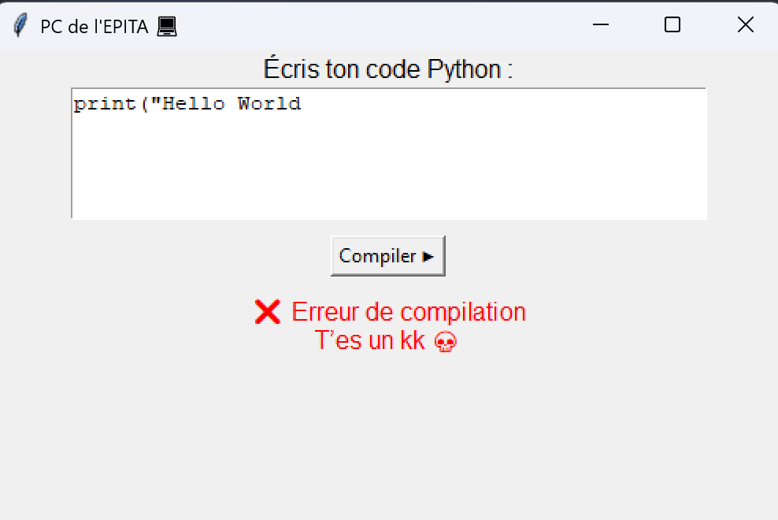
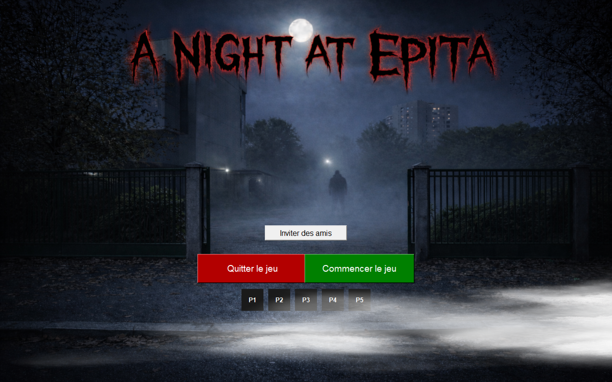
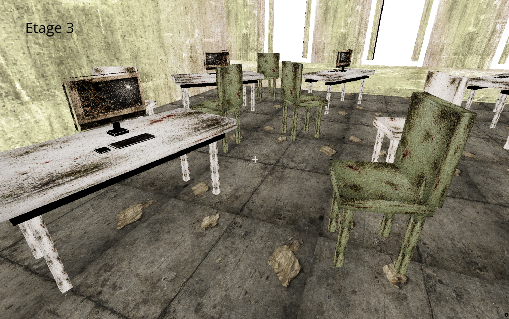
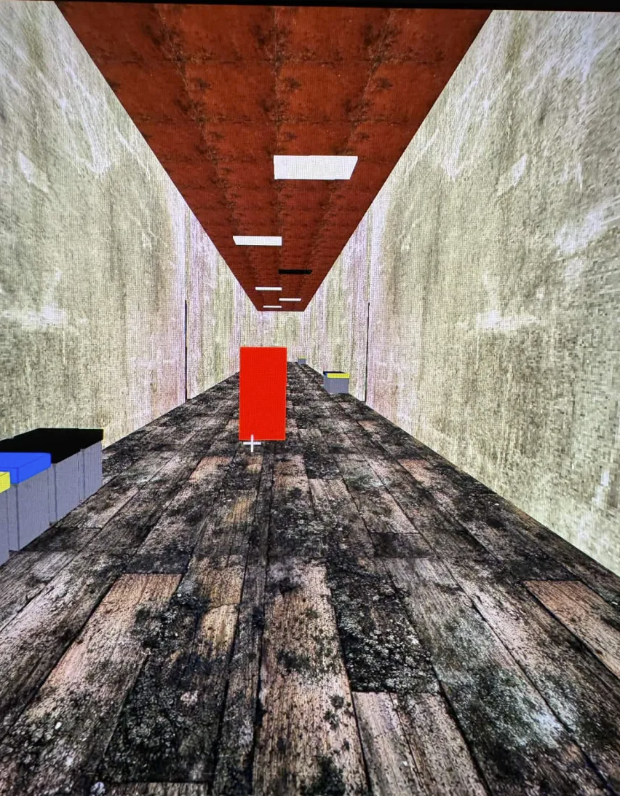

Le développement de "A Night At Epita" a été un processus passionnant et collaboratif. Notre équipe a travaillé dur pour concevoir un jeu qui non seulement divertit, mais aussi
La première énigme consiste à trouver et renseigner le code Python exact afin de réussir cette énigme.

Notre lobby a été entièrement conçu pour vous mettre dans l'ambiance dès le départ

La map du jeu a été conçue pour offrir une expérience immersive et captivante aux joueurs. Chaque zone de la map a été pensée pour refléter le monde de l'Epita et le thème du jeu, avec des détails soignés et une atmosphère unique.

L'intelligence artificielle du jeu a été développée pour offrir des interactions réalistes et engageantes avec les PNJ. Chaque rencontre devient unique et mémorable pour les joueurs.
